Hướng dẫn cách đăng ký người phụ thuộc để tính giảm trừ gia cảnh khi tính thuế TNCN
I. Quy định về đăng ký người phụ thuộc:
Bắt đầu từ ngày 01/07/2025 trở đi: thực hiện theo quy định tại khoản 2, điều 38 của Thông tư 86/2024/TT-BTC thì: Số định danh cá nhân được sử dụng thay cho mã số thuế người phụ thuộc
(Mã số thuế người phụ thuộc được sử dụng đến hết ngày 30/6/2025)
II. Tổng quan về đăng ký thuế cho người phụ thuộc:
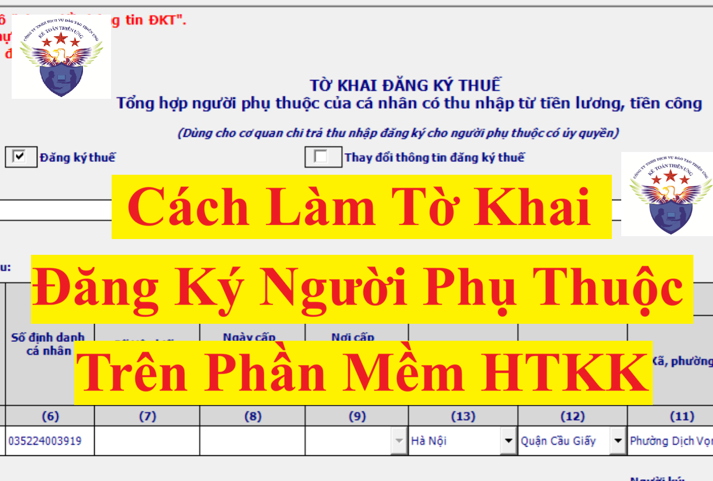
1. Mục đích của việc đăng ký người phụ thuộc:
Để được tính giảm trừ gia cảnh người phụ thuộc (4.400.00/người/tháng) khi tính thuế TNCN -> Nhằm làm giảm thu nhập tính thuế -> Giảm số thuế TNCN phải nộp
Lưu ý: Muốn được tính giảm trừ NPT tại 1 công ty nào đó thì phải thực hiện đăng ký NPT tại công ty đó
2. Khi nào cần đăng ký người phụ thuộc:
Khi cá nhân (người lao động) có Thu nhập chịu thuế - Giảm trừ bản thân > 0 (Tức là có thu nhập chịu thuế lớn hơn 11 triệu thì nếu người lao động có người phụ thuộc sẽ thực hiện đăng ký NPT để được tính giảm trừ NPT khi tính thuế TNCN) (Lưu ý: Thu nhập chịu thuế được xác định = Tổng thu nhập - các khoản thu nhập được miễn thuế)
Còn đối với các cá nhân NLĐ mà có Thu nhập chịu thuế < Mức giảm trừ bản thân (11 triệu) thì cá nhân NLĐ này không bị khấu trừ thuế TNCN => Nên không cần phải đăng ký NPT để tính giảm trừ gia cảnh nữa (Còn nếu NLĐ vẫn đăng ký hoặc đã đăng ký giảm trừ NPT tại doanh nghiệp từ trước đó rồi thì khi tính thuế TNCN vẫn tính giảm trừ, khi làm QTT TNCN vẫn đưa thông tin giảm trừ NPT vào tờ khai quyết toán (PL 05-3/BK-TNCN)
Lưu ý: Về số lần đăng ký NPT:
Cá nhân (NLĐ) chỉ phải đăng ký và nộp hồ sơ chứng minh cho mỗi một người phụ thuộc 1 lần trong suốt thời gian được tính giảm trừ gia cảnh.
Trường hợp người nộp thuế thay đổi nơi làm việc thì phải đăng ký và nộp hồ sơ chứng minh người phụ thuộc như trường hợp đăng ký người phụ thuộc lần đầu
Ví dụ: Vào tháng 2/2025, chị Hòa đã đăng ký NPT là con nhỏ Trần Văn Hải tại công ty Kế Toán Diệu Tâm
+ Sang năm 2026, Chị Hòa tiếp tục làm việc tại công ty Kế Toán Diệu Tâm thì Chị Hòa không phải thực hiện đăng ký lại NPT là con nhỏ Trần Văn Hải tại công ty Kế Toán Diệu Tâm nữa, công ty Kế Toán Diệu Tâm vẫn tiếp tục tính giảm trừ NPT là con nhỏ này cho chị Hòa
+ Đến tháng 6/2027, chị Hòa chuyển nơi làm việc: Kết thúc hợp đồng với công ty Kế Toán Diệu Tâm và ký hợp đồng 36 tháng với công ty Mai Thanh
=> Khi sang công ty Mai Thanh làm việc, chị Hòa muốn được tính giảm trừ NPT là con nhỏ Trần Văn Hải này tại công ty Mai Thanh thì phải thực hiện đăng ký và nộp hồ sơ chứng minh NPT cho công ty Mai Thanh.
3. Điều kiện đăng ký NPT:
3.1. Đối với người nộp thuế (Tức là cá nhân - Người lao động có thu nhập đó ạ):
Theo tiết c.2.1, điểm c, khoản 1, điều 9 của Thông tư 111/2013/TT-BTC thì:
Người nộp thuế được tính giảm trừ gia cảnh cho người phụ thuộc nếu người nộp thuế đã đăng ký thuế và được cấp mã số thuế.
=> Muốn đăng ký NPT thì cá nhân (Người lao động có thu nhập) phải là người đã có mã số thuế TNCN rồi thì mới được đăng ký NPT.
Chi tiết các bạn xem tại đây: Cách đăng ký mã số thuế TNCN
3.2. Đối với người phụ thuộc:
+ Thuộc đối tượng là người phụ thuộc và đáp ứng được các điều kiện để là người phụ thuộc theo Quy định tại khoản 1, điều 9 của Thông tư 111/2013/TT-BTC
+ Trong năm tính thuế đó NPT chưa được đăng ký lấy giảm trừ cho ai (cá nhân người lao động khác). Vì theo Theo tiết c.2.4, điểm c, khoản 1, điều 9 của Thông tư 111/2013/TT-BTC thì:
Mỗi người phụ thuộc chỉ được tính giảm trừ một lần vào một người nộp thuế trong năm tính thuế. Trường hợp nhiều người nộp thuế có chung người phụ thuộc phải nuôi dưỡng thì người nộp thuế tự thỏa thuận để đăng ký giảm trừ gia cảnh vào một người nộp thuế.
+ Đăng ký trong thời hạn quy định tại Khoản 1, Điều 9, Thông tư 111/2013/TT-BTC
3.2.1. Đối tượng NPT và điều kiện để được tính là NPT:
Người phụ thuộc là người mà người nộp thuế thu nhập cá nhân có trách nhiệm nuôi dưỡng
Ví dụ như con, Vợ hoặc chồng, bố mẹ, Anh chị em ruột hay Ông bà nội ngoại; cô dì chú bác ruột...
Chi tiết các bạn xem tại đây: Người phụ thuộc giảm trừ gia cảnh gồm những ai? Điều kiện là gì?
3.2.2. Thời hạn đăng ký NPT:
* Đối với các đối tượng được quy định tại tại tiết d.4, điểm d, khoản 1, Điều 9 Thông tư 111/2013/TT-BTC là các cá nhân khác không nơi nương tựa mà người nộp thuế đang phải trực tiếp nuôi dưỡng, bao gồm:
Ví dụ: Người lao động có NPT là Ông nội đáp ứng đủ các điều kiện theo quy định
4. Cách thức đăng ký người phụ thuộc:
+ Cách 2: Tự cá nhân làm hồ sơ đăng ký NPT trực tiếp với cơ quan thuế
- Hồ sơ đăng ký thuế: Tờ khai đăng ký thuế mẫu số 20-ĐK-TCT ban hành kèm theo Thông tư này.
+ Đối với cá nhân cư trú có thu nhập từ tiền lương, tiền công do các tổ chức Quốc tế, Đại sứ quán, Lãnh sự quán tại Việt Nam chi trả nhưng tổ chức này chưa thực hiện khấu trừ thuế thì nộp tại Cục Thuế nơi cá nhân làm việc
+ Đối với cá nhân có thu nhập từ tiền lương, tiền công do các tổ chức, cá nhân trà từ nước ngoài thì nộp tại Cục Thuế nơi phát sinh công việc tại Việt Nam
Chi tiết về Văn bản ủy quyền Mẫu số 41/UQ-ĐKT thì các bạn xem và tải về tại đây:
Lưu ý: Ngoài hồ sơ đăng ký thuế cho NPT theo quy định tại điểm b khoản 1, điều 22 của Thông tư 86/2024/TT-BTC nêu trên thì cá nhân (người lao động) sẽ phải nộp hồ sơ chứng minh NPT cho doanh nghiệp:
Bước 2: Doanh nghiệp làm tờ khai đăng ký NPT nộp cho cơ quan thuế
Doanh nghiệp làm tờ khai đăng ký thuế theo mẫu số 20-ĐK-TH-TCT ban hành kèm theo Thông tư 86/2024/TT-BTC
Mẫu 20-ĐK-TH-TCT theo thông tư 86 tờ khai đăng ký người phụ thuộc
=> Rồi nộp cho cơ quan thuế quản lý trực tiếp cơ quan chi trả thu nhập.
Cách doanh nghiệp làm tờ khai đăng ký người phụ thuộc trên phần mềm HTKK như sau:
Bước 1: Đăng nhập vào phần mềm HTTK bằng MST của doanh nghiệp muốn kê khai
Bước 2: Lựa chọn tờ khai:

- Chọn Mục “Thuế Thu Nhập Cá Nhân”
- Chọn tờ khai: chọn dòng “20-ĐK-TH-TCT Đăng ký thuế tổng hợp NPT của CN có thu nhập từ TL, TC” chính là tờ khai đăng ký NPT Mẫu số: 20-ĐK-TH-TCT theo Thông tư số 86/2024/TT-BTC
=> Chọn xong thông tin về kỳ tính thuế thì bấm vào “Đồng ý” để vào giao diện của tờ khai
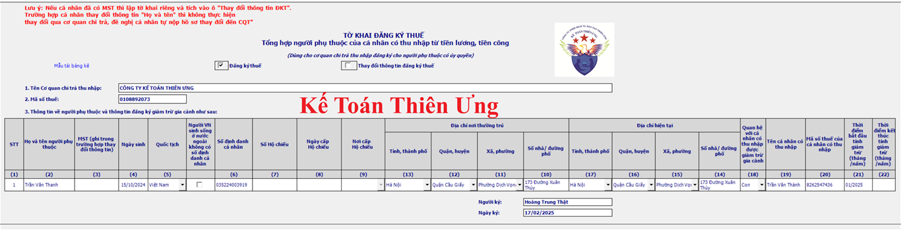
Căn cứ vào giấy ủy quyền và các giấy tờ của cá nhân đã nộp cho doanh nghiệp để kê khai thông tin vào tờ khai đăng ký NPT
Các bạn có thể tham khảo hoặc tải về giấy ủy quyền tại đây: Mẫu giấy ủy quyền đăng ký người phụ thuộc 2025 theo Thông tư 86/2024/TT-BTC
=> Căn cứ vào giấy ủy quyền Mẫu số 41/UQ-ĐKT theo Thông tư 86/2024/TT-BTC mà ông Dũng đã nộp cho công ty Diệu Tâm thì ông Dũng đang ủy quyền đăng ký thuế lần đầu cho người phụ thuộc => Nên công ty Diệu Tâm sẽ tích chọn vào ô “Đăng ký thuế”
Người lao động chuyển nơi làm việc: đã đăng ký NPT ở các nơi trước đó rồi => Nay chuyển sang nơi làm việc mới => Đăng ký tại nơi làm việc mới: tích chọn vào ô Thay đổi thông tin đăng ký thuế”
Cách kê khai thông tin về thời gian tính giảm trừ cho 2 cột chỉ tiêu 21 và 22:
+ Cột chỉ tiêu 21: Thời điểm bắt đầu tính giảm trừ (tháng/năm)
Đến tháng 10/2025, chị Minh làm giấy ủy quyền đăng ký NPT
=> Ghi “Thời điểm bắt đầu tính giảm trừ” là: 06/2025
+ Tại thời điểm làm việc tại công ty Bảo An chị Minh đã đăng ký và lấy giảm trừ NPT là người con này (đã tính giảm trừ đến tháng 3/2025)
+ Đến tháng 4/2025, chị Minh chuyển đổi nơi làm việc từ công ty Bảo An sang công ty Diệu Tâm => Thì khi chuyển NPT sang đăng ký giảm trừ tại công ty Diệu Tâm thì sẽ khai “Thời điểm bắt đầu tính giảm trừ" tại công ty Diệu Tâm là tháng 04/2025
+/ Trường hợp chuyển đổi NPT từ NLĐ này sang NLĐ khác (Ví dụ chuyển NPT là con từ vợ sang chồng hoặc ngược lại) thì khai là thời điểm bắt đầu tính giảm trừ NPT cho NLĐ đó
=> Tại năm 2024, Người vợ đã đăng ký NPT là người con chung này. Và vì trong cùng 1 năm dương lịch không được vừa tính giảm trừ cho chồng, vừa tính giảm trừ cho vợ nên phải đợi hết năm 2024, đến năm 2025 mới chuyển đổi được sang cho chồng
=> Đến tháng 01/2025, thực hiện chuyển đổi => Khi chồng đăng ký NPT tại công ty chồng thì sẽ khai thời điểm bắt đầu tính giảm trừ NPT là từ tháng 01/2025
+ Cột chỉ tiêu 22: Thời điểm kết thúc tính giảm trừ (tháng/năm)
+/ Trường hợp NLĐ thay đổi thời điểm kết thúc tính giảm trừ NPT (bao gồm cả trường hợp đã khai hoặc bỏ trống cột chỉ tiêu 22 khi đăng ký trước đó) thì làm hồ sơ, thủ tục thay đổi thông tin đăng ký thuế để kê khai thông tin cho chỉ tiêu số 22 này theo thời điểm thực tế kết thúc tính giảm trừ NPT.
Bước 5: Kết xuất tờ khai Bảng tổng hợp đăng ký NPT giảm trừ gia cảnh dạng XML để nộp qua mạng
Cách nộp tờ khai đăng ký người phụ thuộc qua mạng:
Thực hiện nộp tờ khai đăng ký người phụ thuộc giảm trừ gia cảnh (Mẫu số: 20-ĐK-TH-TCT theo Thông tư số 86/2024/TT-BTC) qua trang https://dichvucong.gdt.gov.vn/
Chi tiết như sau:
Bước 1: Truy cập vào trang https://dichvucong.gdt.gov.vn/
Bước 2: Đăng nhập tài khoản của doanh nghiệp bạn vào hệ thống
(2) Đối tượng đăng nhập: chọn “Doanh nghiệp”
(3) Rồi thực hiện: nhập tên tài khoản và mật khẩu của công ty bạn vào hệ thống
(4) Nhập Mã captcha
(5) Bấm vào “Đăng nhập” để đăng nhập vào HỆ THỐNG THÔNG TIN GIẢI QUYẾT THỦ TỤC HÀNH CHÍNH
Bước 3. Tra cứu và chọn mã thủ tục hành chính cho tờ khai đăng ký NPT mẫu 20-ĐK-TH-TCT
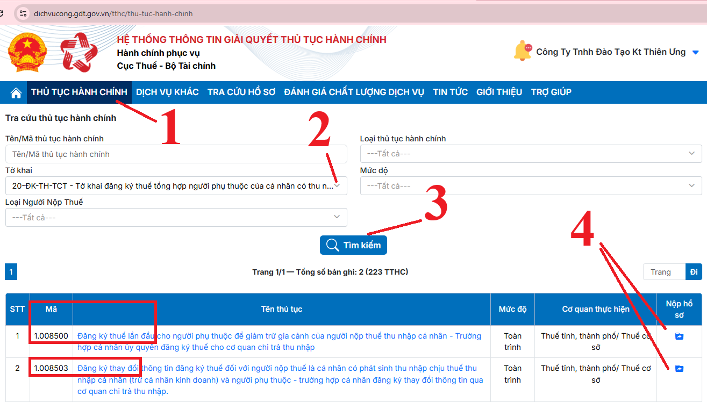
Sau khi các bạn đã đăng nhập được tài khoản vào vào trang https://dichvucong.gdt.gov.vn rồi thì các bạn thực hiện lần lượt như sau:
(1) Bấm chọn vào chức năng "THỦ TỤC HÀNH CHÍNH" để tìm mã thủ tục hành chính
(2) Tra cứu tờ khai: các bạn bấm vào dòng "Tờ khai" sau đón gõ vào dòng tìm kiếm "20-" là sẽ hiện thị ra tờ khai Mẫu 20-ĐK-TH-TCT tờ khai đăng ký người phụ thuộc DÙNG CHO CƠ QUAN CHI TRẢ THU NHẬP
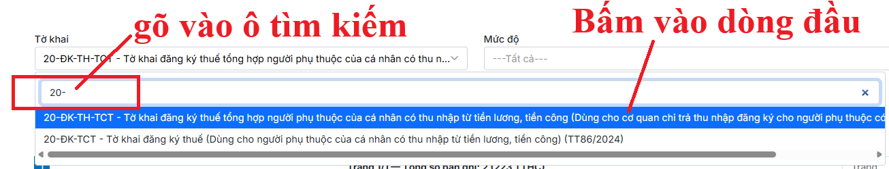
(3) Bấm vào ô "Tìm kiếm" để hệ thống tra cứu tìm kiếm mã thủ tục hành chính đăng ký NPT
(4) Chọn nộp hồ sơ cho thủ tục hành chính tương ứng:
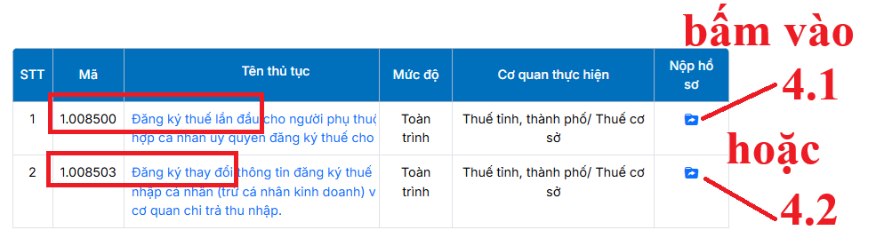
Nếu công ty bạn đang thực hiện đăng ký lần đầu cho NPT chưa có MST thì bấm vào dòng 4.1
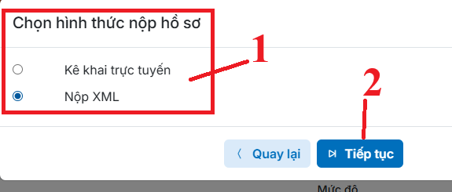
Nếu bạn đã làm tờ khai đăng ký NPT trên phần mềm HTKK rồi và đã kết xuất dạng XML từ phần phần mềm HTKK ra rồi thì bạn sẽ bấm chọn vào dòng "Nộp XML" để nộp tờ khai đã làm từ phần mềm HTKK đó qua mạng
Còn nếu bạn chưa có tờ khai đăng ký NPT dạng XML thì bạn sẽ bấm vào dòng "Kê khai trực tuyến" để thực hiện kê khai trực tiếp luôn trên trang Dịch Vụ Công này
Còn nếu doanh nghiệp của bạn đang thực hiện đăng ký thay đổi thông tin đăng ký thuế cho NPT thì bấm vào dòng 4.2
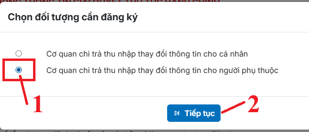
Sau đó chọn hình thức nộp hồ sơ:
Nếu bạn đã làm tờ khai đăng ký NPT trên phần mềm HTKK rồi và đã kết xuất dạng XML từ phần phần mềm HTKK ra rồi thì bạn sẽ bấm chọn vào dòng "Nộp XML" để nộp tờ khai đã làm từ phần mềm HTKK đó qua mạng
Còn nếu bạn chưa có tờ khai đăng ký NPT dạng XML thì bạn sẽ bấm vào dòng "Kê khai trực tuyến" để thực hiện kê khai trực tiếp luôn trên trang Dịch Vụ Công này
Bước 4. Tải tờ khai XML lên hệ thống
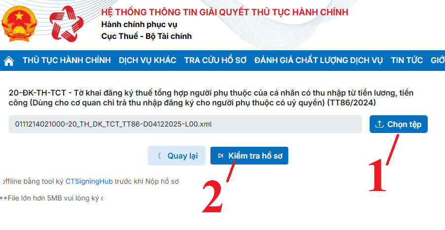
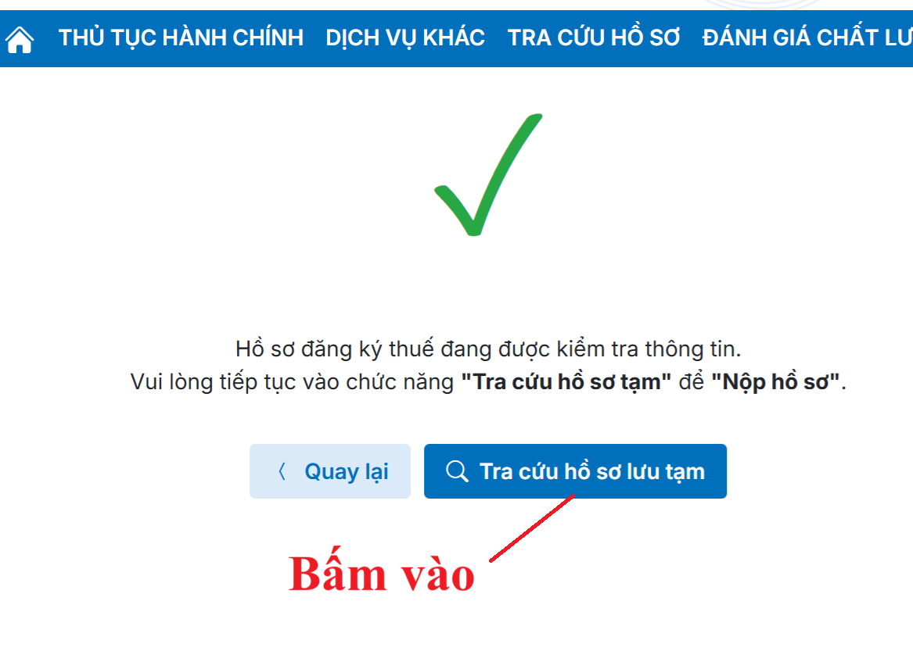
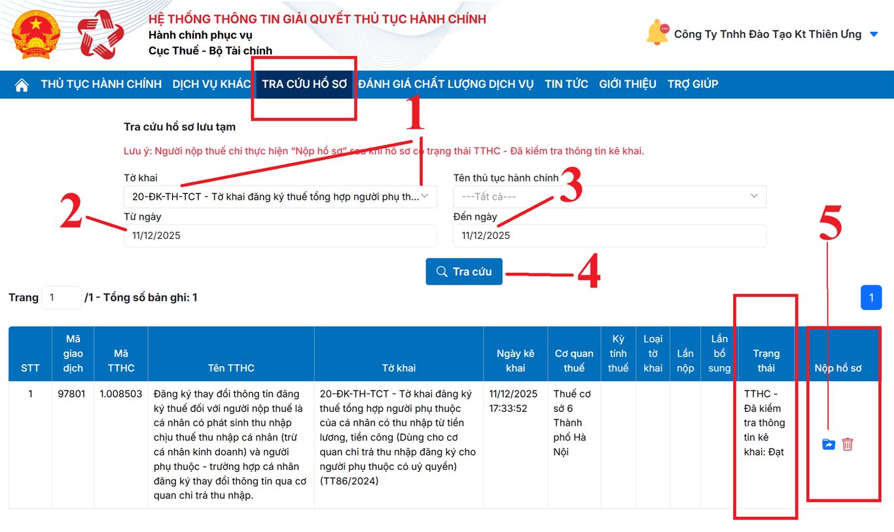
.
Lưu ý: Doanh nghiệp chỉ thực hiện bấm vào “Nộp hồ sơ” sau khi hồ sơ có trạng thái là "TTHC - Đã kiểm tra thông tin kê khai"
Nếu bạn đã bị đăng xuất tài khoản hoặc lúc sau bạn đăng nhập lại thì đường dẫn để bạn tra cứu hồ sơ lưu tạm như sau:
Đăng nhập vào hệ thống dịch vụ công => Bấm vào chức năng "TRA CỨU HỒ SƠ" rồi chọn dòng "TRA CỨU HỒ SƠ LƯU TẠM"
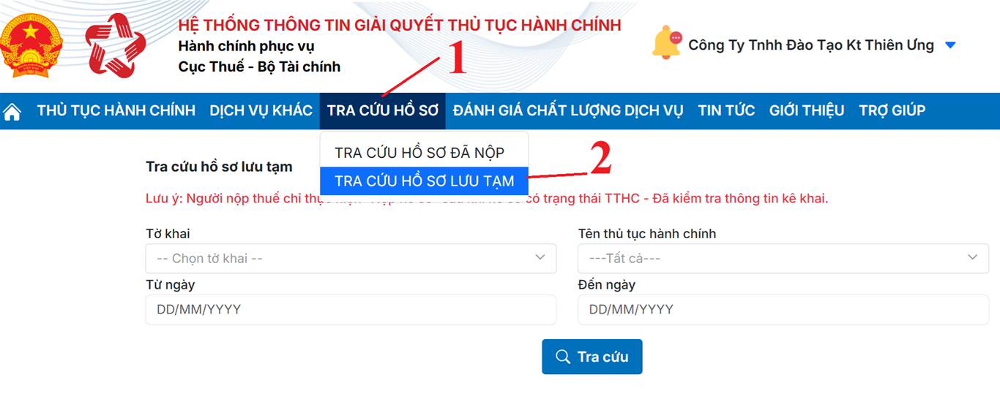
Rồi sau đó bạn tiến hành chọn các thông tin cần tra cứu tương tự như ở bên trên
Bước 5. Nộp hồ sơ
Sau khi kiểm tra thông tin hồ sơ đã đạt thì hệ thống sẽ hiện thị ra chữ "Nộp hồ sơ" tại cột "Nộp hồ sơ"
=> Bấm vào “Nộp hồ sơ” thì màn hình sẽ hiện thị ra tờ khai
Sau đó bạn bấm vào “Hoàn thành kê khai”
=> Bạn bấm vào “Ký hiện tử và nộp hồ sơ” để tiến hành nhập mã pin -> ký điện tử và nộp hồ sơ qua mạng
Sau khi ký gửi thành công là công việc nộp tờ khai đã ký thuế đã hoàn thành
Thời hạn giải quyết thủ tục hành chính: 3 ngày làm việc kể từ ngày cơ quan thuế nhận được hồ sơ đăng ký thuế đầy đủ theo quy định bằng phương thức điện tử qua Cổng thông tin điện tử
Bước 6: Kiểm tra kết quả tại mail đã đăng ký để nhận thông báo của CQT
+ 1 mail đầu là thông báo tiếp nhận hồ sơ đăng ký thuế điện tử
+ Mail thứ 2 là: Gửi kết quả
=> Sau khi nhận được mail thứ 2 thì các bạn kiểm tra kết quả trên thông báo tại mail này để xem việc đăng ký đã thành công hay chưa, có xảy ra lỗi nào hay không
Doanh nghiệp có thể truy cập vào trang web: https://dichvucong.gdt.gov.vn/ Để tra cứu chi tiết kết quả đăng ký NPT như sau:
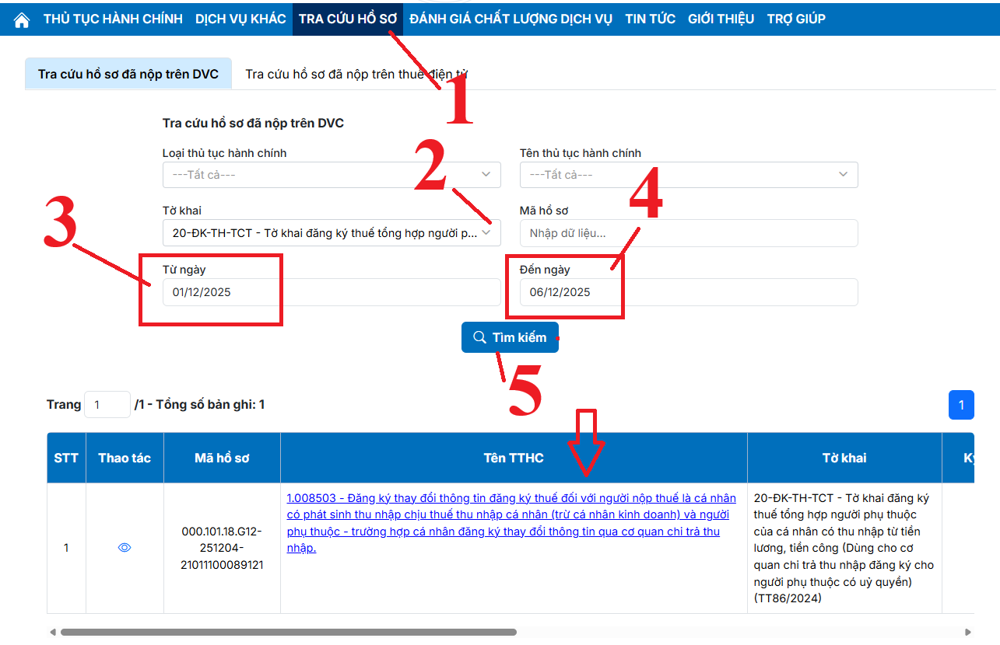
Các bạn muốn làm kế toán thuế thực tế, tự mình có thể kê khai thuế tháng/quý, cách đăng kýMST cá nhân, người phu thuộc, cách lập tờ khai quyết toán thuế TNCN, TNDN cuối năm ... có thể tham gia: Lớp học thực hành kế toán thuế thực tế.